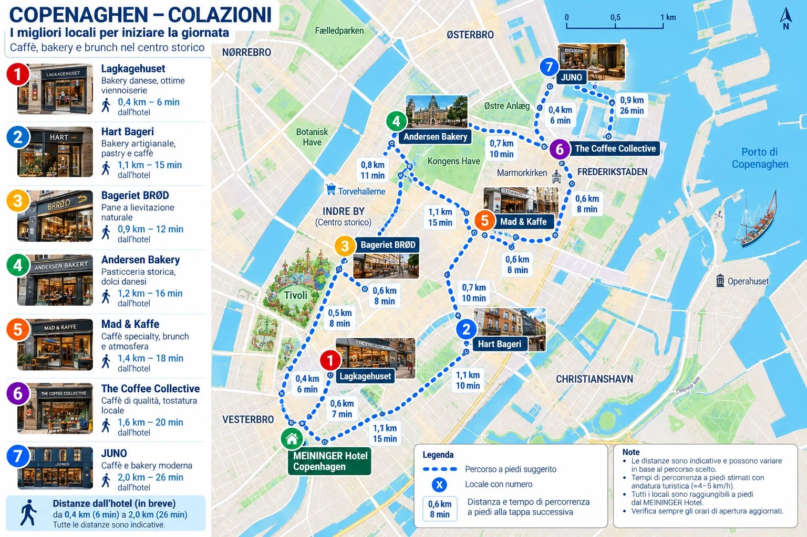

🥐 Colazioni e merenda · Copenaghen
Selezione per 4 adulti e 2 ragazzi. I primi quattro sono le alternative principali per la colazione; JUNO è più adatta alla merenda. Tocca i segnaposto sulla mappa o usa «Naviga». Gli orari vanno verificati prima della visita.
🗺️ Cartina illustrata delle colazioni
Sette locali segnalati, con distanze e tempi indicativi dall’hotel e tra le tappe. Apri l’immagine per ingrandirla.

Le posizioni e i collegamenti disegnati sono indicativi: per la navigazione effettiva usa i pulsanti Naviga qui sotto.
📍 Mappa interattiva e locali
Mappa online con OpenStreetMap. L'elenco e i pulsanti Naviga restano disponibili anche se la mappa non si carica; la navigazione stradale richiede Internet.
← Torna alla giornata